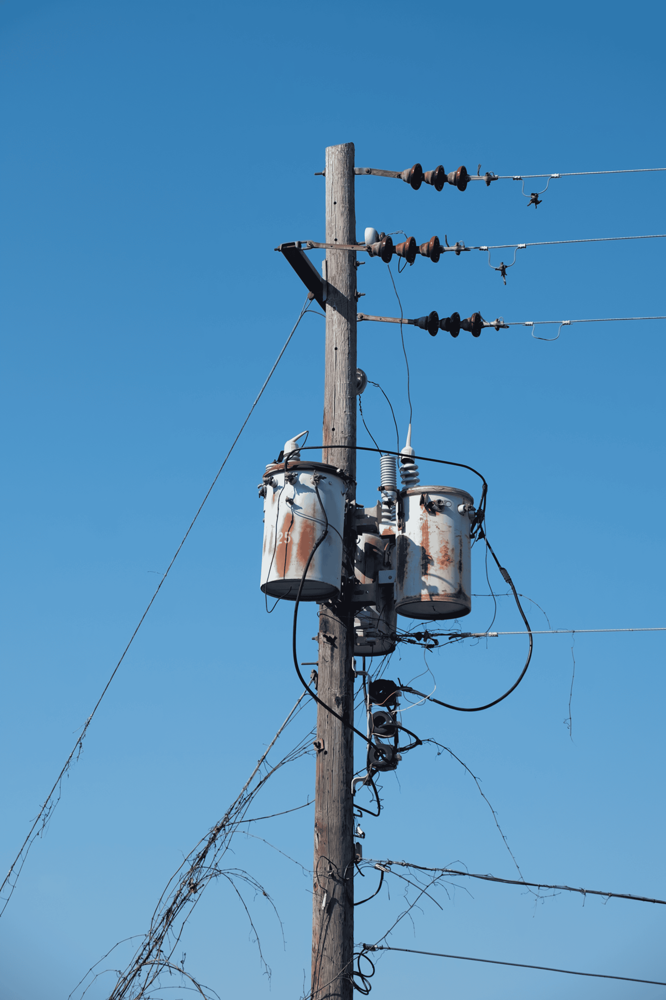
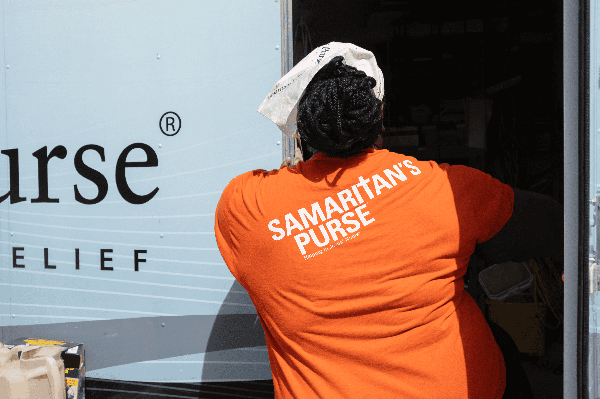
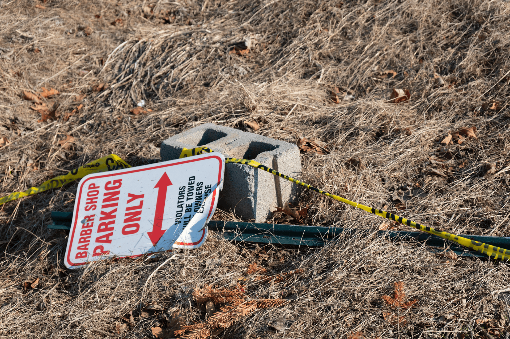

Tropical storm Helene spared no demographic as it tore through Western North Carolina, but the recovery in greater Asheville had not been as equally distributed.
The Latino community in particular faced a different and, in some ways, more difficult path post-storm. And while many were able to seek help after this traumatic disaster, Latinos faced many systemic and language limitations that disrupted the way help was found and used.
As one of the few bilingual Latino journalists in Asheville, Jose Sandoval found himself immersed in seeing how language barriers, limited access to aid and immigration-related fears shaped how Latinos recovered.
"Recovery is going to take years. Here in the city, the debris is gone, but the financial impact still lingers," said Sandoval, a reporter for Blue Ridge Public Radio, the National Public Radio station in Asheville. "A lot of these effects are still around. I do think Helene exposed a lot of language barriers, especially in how to better reach the [Latino] community."
While barriers slowed recovery, the Latino community remained resilient, even when governmental systems fell short. Caught in the Current sat down with Sandoval to talk about what happened and what was learned. What follows is an edited and condensed version of that conversation.
Q: Take me back to a few days before Helene hit. What were you hearing from Latino and Spanish-speaking families about the storm, especially as a bilingual reporter?
I think there were preparations from the county, but nobody knew how bad the storm was going to be. People were kind of prepared, but also at the same time not taking it super seriously, because nothing of that magnitude had ever happened here.
The county was doing a lot of stuff because they have bilingual communication staff. They were going out to different communities telling them, "Hey, just be prepared," but the extent of the damage and the storm; nobody had any clue.
Q: Did warnings reach Spanish-speaking residents at the same time as English-speaking residents?
I think it probably didn't reach them the same because people didn't take some of the warnings seriously. The National Weather Service will translate some of their stuff into Spanish, but besides that, I don't think it really fully reached people.
Q: What about post-storm and the effort to rebuild and seek aid? Did language create a barrier?

Power outages were suffered throughout many parts of Western North Carolina because of tropical storm Helene. Photo credit: Sydney Woogerd
I think so for sure. It's also status, too, that created another barrier. Most people didn't know where to go to get water or very simple essential things that they needed. You had these nonprofits that were on the go immediately after Helene happened, like Poder Emma, True Ridge, We Need x WNC, but there definitely was a barrier because you can't access your phone, you can't access the internet.
And for some of these groups, they weren't going to get their supplies from county staff either, because of that mistrust between the community and government officials. So folks were going out to these nonprofits for basic supplies, but they had to take whatever information they could find in English, translate it, write it down and pass it by word of mouth.
Q: Did immigration fears discourage people from going to shelters or applying for FEMA relief?
Families here are of mixed status, so it is very difficult for folks to get FEMA help or SBA loans. What I'm hearing from case managers is that they can't qualify because of their immigration status. A lot of the help has been coming from nonprofits, like Beloved Asheville and Samaritan's Purse, or churches.
I interviewed a family out in Swannanoa, a mixed-status family. The mom has residency, but she was hesitant to apply for FEMA, so her son, who was born here, applied for it. Even then they didn't get that much money, and Beloved came in and rebuilt the homes for them.
There was definitely that type of barrier for aid. Latinos that might have citizenship or residency but don't speak English had trouble getting through to FEMA and government agencies. Folks would not apply because they didn't know whether they qualified or not.

A volunteer with Samaritan's Purse unloads supplies in Asheville as communities across Western North Carolina continued to rebuild after tropical storm Helene. Photo credit: Sydney Woogerd
Q: Tell me a little bit about the Latino community here. What are they like?
It's a very tight-knit community, for sure. The majority of Latinos that live out here, specifically in the city, are Mexican. A lot of them work in agriculture or hospitality because Asheville is such a touristy town. The majority of them live in West Asheville and in the Emma community.
Q: Did the concentrated Latino population face a lot of destruction? Did it affect financial disparity?
Oh, for sure. A lot of the Latinos that live here work in hospitality, agriculture or manual labor, and all that stopped. Families were reaching out saying, "I don't know how I'm going to be able to pay rent" because they lost about a month of work. That's a lot of money, and the financial aspect is 100% — they couldn't get back to work the same way other people could right away.

A fallen sign and caution tape remain scattered across the grass in Asheville, North Carolina, reflecting the damage and disruption left behind by tropical storm Helene. Photo credit: Sydney Woogerd
Q: Did you notice a visible disparity between how non-Latinos bounce back versus Latinos?
If folks couldn't qualify for SBA loans, they couldn't afford to take another loan, and they were taking money out of their own pockets to pay their employees for weeks, and you can tell that the disparity is still there. It's 100% still there.
Q: Have you noticed any psychological or social effects among the Latino community in Asheville?
We had immigration agents here, and people were seeing folks in ICE gear, in their car. Nonprofits asked local officials to have them wear different clothing because that was preventing people from going to get the help that they need. People were afraid to go out of their house, and even families kept their kids at home.
Q: How did members of the Latino community support one another during the disaster, beyond the work of nonprofits?
You saw people really pulling together, bringing resources together, trying to figure out what was going on. If somebody had a chainsaw, they were bringing it out, chopping down trees so people could get through and get help. People really came together at that time, every single person was looking out for each other.
"Hey, you need more water? You need food? I got you." "There are trees blocking the way? OK, we've got a couple people with chainsaws, we'll chop it down." Everybody was very together at that time, because we had no idea what was going on.
Q: Did tropical storm Helene expose issues in how bilingual disaster recovery operates, and are there efforts to improve those systems?
The county had a bilingual communication specialist with strong relationships with nonprofits, but it still showed gaps. Staffing is a huge issue, and a lot of the time people want to expand outreach, but they don't have the funding, so it becomes a one-person operation.
Counties are trying to improve, but there are still barriers like staffing and funding, and it's hard to retain bilingual workers. The county was sharing information in Spanish on social media and doing daily briefings, but if people didn't know where to access that information, it didn't help. A lot of communication still came down to word of mouth.
Q: As one of the few Spanish-speaking journalists in the area, how did you approach outreach to Spanish-speaking residents?
The challenge was getting information out effectively. I was pulling updates from nonprofits and local towns about resource distribution centers, but if people aren't listening, you're essentially speaking to nobody. The briefings kept getting pushed back and were airing at random times, sometimes overnight.
I brought in Theresa Serrano and a FEMA bilingual communication specialist and interviewed nonprofits in Spanish whenever I could. But it still came back to: Who was actually listening?
I was trying to take a broader look at language access across counties. Most did the best they could with the resources they had, but there's a big difference between Asheville and more rural areas. In some places, they had Spanish-speaking officers going door to door, warning communities through word of mouth.
Q: Did the language barrier look different in rural areas compared to Asheville?
I think so, for sure. You have a lot of bilingual communication staff in Asheville, but in more rural counties, you're lucky if you have one, and it's hard to keep that person around. In those areas, you're asking one communications person to handle everything in Spanish by themselves.
We need a better system. The Spanish-speaking population is the fastest-growing in the region, but the language barrier is still there. Local governments want to improve their relationship with these communities, but language access isn't required by law, so a lot of the time they're meeting the bare minimum.
Q: In a broader sense, what do you wish readers better understood about language barriers?
I think there still is a language barrier, and it's complicated. Local governments want to do a better job, but it's not as simple as hiring one bilingual person and expecting them to handle everything. That puts a huge burden on one person.
With natural disasters becoming more frequent, language access is something we really need to take seriously. It comes down to how we provide information to different communities and whether we're doing it in the best way possible. How do we improve, how do we prepare people ahead of time, and how do we make sure the message actually reaches them and is taken seriously?